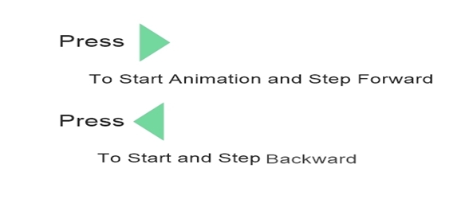
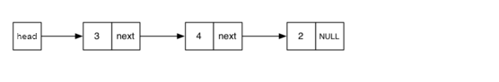
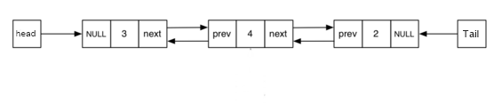
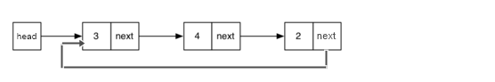

LinkedList:
A linked list is a sequence of items arranged one after another.Each item in list is connected to the next item via a link and together the data element and the link is called a node.The link is a pointer to the same type of structure.It is Dynamic DataStructure and allocates and de-allocates memory while the program is running.

Types of LinkedList:
Linear linked list:Each Node has one address part and one data part.last node is not connected to any other node link part of the lart node contains Null.

Doubly LinkedList: Each node has one data part and two link parts.one link part contains the adress of previous element and other contains the address of next element.

Circular LinkedList: Each node has one data part and one adress part,each node is connected to the next node and the last node is connected to the first node.

Application of LinkedList:
LinkedList is used in the complier for maintainence of symbol table
LinedList is used to implement other DataStrucures e.g Stack,Queue e.t.c.
LinkedList is used in multiple precision arithmetic